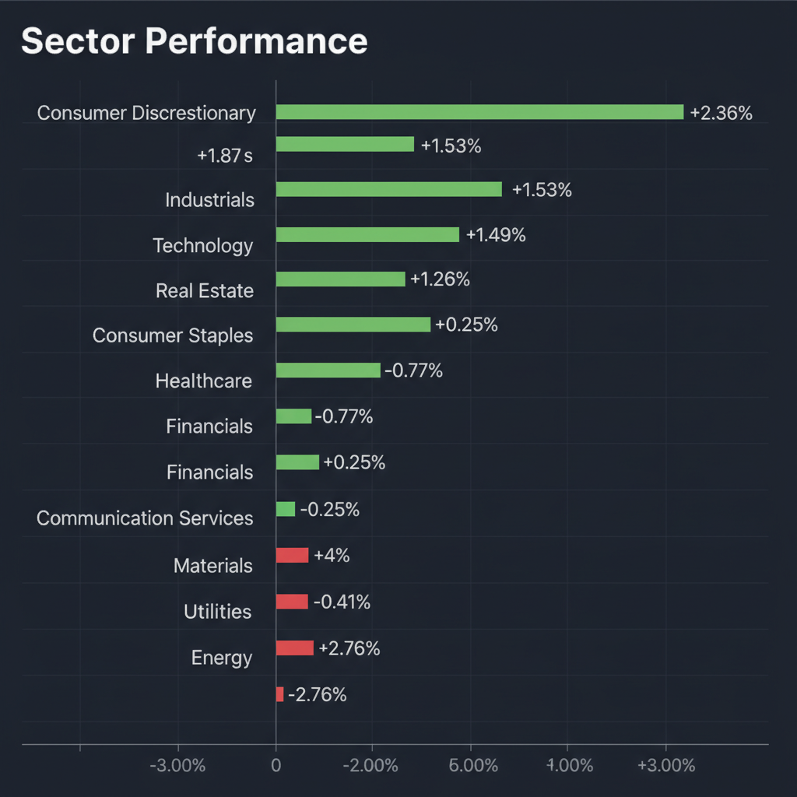
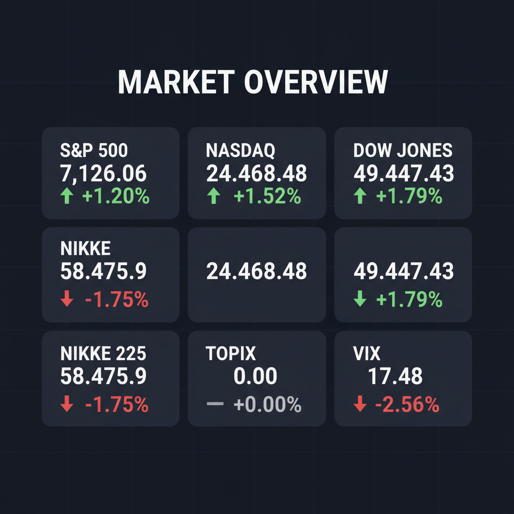

Daily Investment Report - 2026-04-20
Generated: 2026/4/20 7:18:15


1. エグゼクティブサマリー
* 米国の金利低下・原油安による大型ハイテク株主導の強気相場（モンスター・ラリー）と、為替・過熱感を背景に調整する日本市場のデカップリングが進行しています。
* 今週の過密な決算発表ラッシュを前に市場のVIXは異常に低く推移しており、中東の地政学リスクやインフレ再燃という「最悪のシナリオ」に対する警戒が極端に欠如しています。
* 投資家は大型株への過度な集中を避け、キャッシュ比率を引き上げてヘッジを構築しつつ、ニッチな成長力やM&Aなどのカタリストを持つ「日米の中小型株」へ選別的に資金をシフトすべき局面です。
2. 注目銘柄リスト
強気（買い推奨）
*
横田製作所（日本株） [数十億円規模]: AIデータセンターの水冷化トレンドに合致する特殊ポンプ技術を持ち、PBR1倍割れの無借金経営で下値リスクも限定的な「安全なテンバガー」候補です。
*
安永（日本株） [100億円以下]: 主力のエンジン部品から半導体ワイヤソーや検査装置への事業ピボットに成功しつつあり、次世代製造装置の受注拡大による強烈な成長モメンタムが期待できます。
*
インフロニアHD（日本株） [中堅規模]: 三菱商事からの「水ing」買収（912億円）により、安定した営業キャッシュフローと長期的な配当原資の確保が見込め、バリュエーションの持続的な切り上がりが期待されます。
*
紙パルプ・私鉄セクターの低PBR銘柄群（日本株） [中小型]: 村上ファンド系のアクティビストが照準を合わせており、PBR0.5〜0.7倍で放置されている遊休資産の売却や自社株買いを通じて、劇的な資本効率の改善が見込めます。
中立（様子見）
*
QXO（米国株） [大型・M&A規模170億ドル]: TopBuildの超大型買収による事業スケールの拡大は魅力的ですが、巨額ののれん代と有利子負債の増加が懸念されるため、財務プロフォーマとROICの改善を確認するまでは静観すべきです。
*
スターシーズ（日本株） [超小型規模]: 次期経常利益1.75億円の黒字転換見通しはポジティブな初動シグナルですが、アパレル小売りは参入障壁が低いため、利益改善が構造的なものか見極める必要があります。
弱気（警戒）
*
HP（米国株） [大型規模]: 買収ターゲットとしての思惑だけで株価が上昇していますが、PC・プリンタ事業の構造的な成長率は低く、M&Aが頓挫した際の急落リスクが高い典型的なバリュートラップです。
*
ニデック（日本株） [大型規模]: 不正会計問題や創業者のトップダウンによるガバナンスの課題が浮上しており、指標面で割安に見えても機関投資家のESGスクリーニングから外れる恒常的なディスカウントリスクがあります。
3. セクター推奨ランキング
*
1位：資本財・インフラセクター
インフロニアHDの水処理事業M&AやQXOの建材企業買収に見られるように業界再編が活発化しており、AIデータセンター建設需要とも相まって中長期的な資金流入が継続する見通しです。
*
2位：エネルギーセクター（ヘッジ目的として）
足元は原油急落で売り込まれていますが、中東（イラン）の地政学リスクが最悪のシナリオを迎えて原油高騰が起きた際、ポートフォリオ全体を守る最も安価で強力な逆張り・ヘッジ枠として不可欠です。
*
3位：一般消費財・小売セクター
インフレ鈍化と原油安が消費者の購買力回復に直結しており、物流網の最適化（自動化やロボティクス化）を進める中小型Eコマース関連企業の利益率向上が期待できます。
*
4位：ヘルスケアセクター
市場が目先の「適温相場」の終わりを察知し、景気減速やインフレ再燃（スタグフレーション）のテールリスクを意識し始めた際、景気動向に左右されにくいディフェンシブ特性が資金の逃避先として機能します。
*
5位（最下位）：日本の外食・食品・内需セクター
中東情勢の悪化による原油高や物流網の混乱が起きた際、輸入コスト増を販売価格に転嫁するプライシングパワーが弱く、深刻な利益率の圧迫（マージン・スクイーズ）に直面するリスクが極めて高いです。
4. 今週の注目イベント
*
今週中：日米欧の主要企業による「過密な第1四半期決算発表（決算ラッシュ）」
*
今週中：日本・全国CPI（消費者物価指数）の発表
*
4月20日：日本企業（ミラースホールディングス、エスポア、ヤマザワ等）の決算発表
5. リスク要因
*
中東情勢の急激な悪化とインフレ再燃ショック：イランの兵器補充加速や和平交渉拒絶など地政学リスクが爆発し、原油高から金利急騰を引き起こし、高バリュエーションのハイテク株がクラッシュする最悪のシナリオ。
*
VIX低下の罠と極端な過熱感：恐怖指数が不自然な低水準で推移し、市場が「悪材料」を完全に無視しているため、少しでも前提が崩れた際に凄まじいパニック売りが発生するリスク。
*
大型ハイテク株（Mag 7）への過度な集中：決算ラッシュにおいて一社でも将来ガイダンスをミスした場合、相関関係の高まった市場全体が一気に連鎖崩壊するパーフェクト・プライシングの罠。
*
新興国発のサプライチェーン・コスト危機：バングラデシュでの燃料価格引き上げに見られるように、戦争によるエネルギーコスト増が物流網を直撃し、世界的なスタグフレーションを引き起こすリスク。
*
為替変動（円高）と日本株の過熱崩壊：米国の金利低下に伴う日米金利差の縮小が急激な円高を引き起こし、「日経平均6万円」の楽観論をへし折って大型外需株を中心に資金が逃避・下落するリスク。
6. アクションアイテム
*
キャッシュ比率の引き上げ：過密な決算ラッシュと地政学リスクの同時発生に備え、新規の大型ポジションメイクを控え、ポートフォリオの現金比率を最低30%へ直ちに引き上げる。
*
大型ハイテク株の利益確定とポジション縮小：FOMO（取り残される恐怖）に乗じた巨大テクノロジー株への追認買いを避け、すでに保有しているポジションは利益確定を行いサイズを半減させる。
*
ブラックスワンに向けたヘッジの構築：総悲観で売られているエネルギーETF（XLE）の打診買いや、安価に放置されているVIXコールオプションの購入を実行し、テールリスクに対する保険をかける。
*
優良な中小型株の選別とエントリー準備：市場全体が調整やパニックに陥る局面を狙い、横田製作所や安永といった「PBR割安・黒字・AIインフラ関連」のニッチな超小型株を少しずつ拾い集める。
*
ストップロス（損切り）の厳格な設定：現在保有している銘柄（特にハイテク・消費財セクター）については、直近安値や買値の5〜7%下の水準に機械的なストップロス注文を設定し、ギャップダウン（窓開け下落）による致命傷を防ぐ。